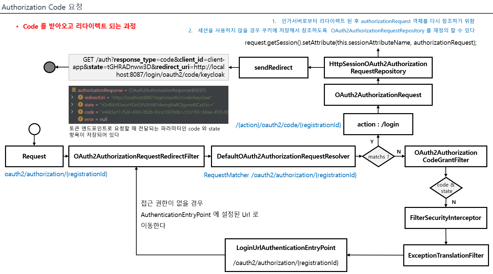
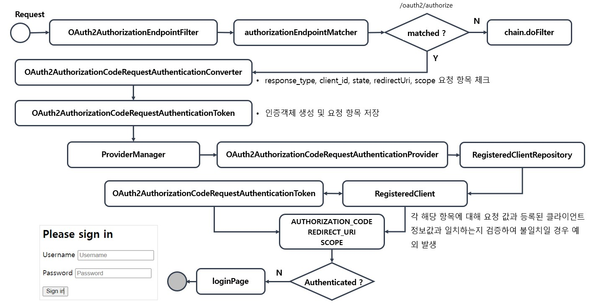
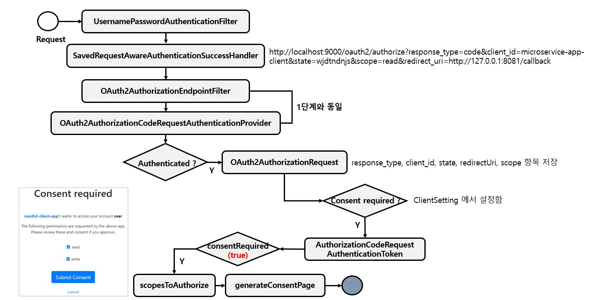
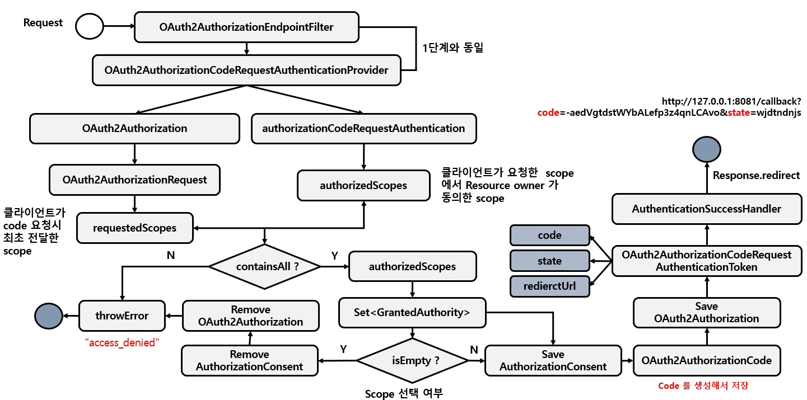
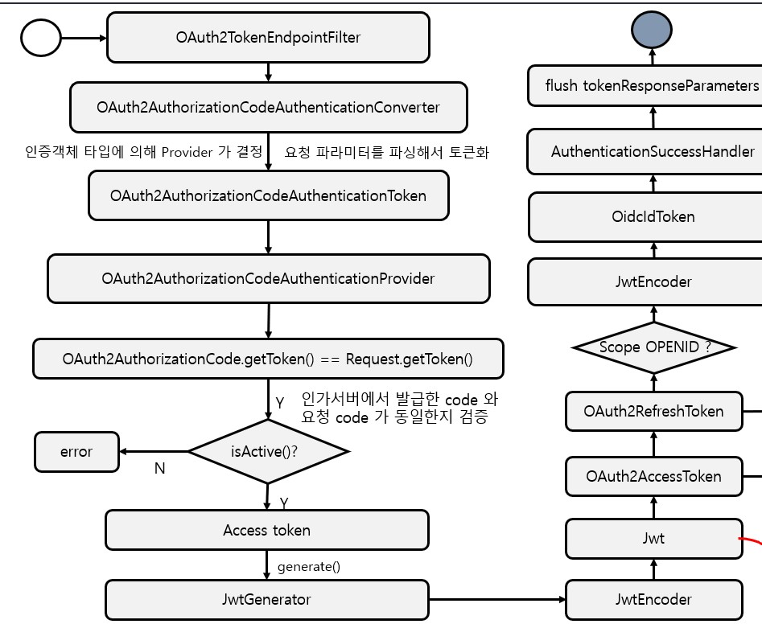

Spring Security와 OAUth2.0
Spring Security에서는 OAuth2.0을 기반으로 한 사용자 인증과, 클라이언트 인가 과정에 대한 기능을 지원합니다.
이 섹션에선 아래 이미지의 1번부터 8번까지의 프로세스를 Client Server와 Authorization Server 내부 동작과정을 중심으로 살펴보고자 합니다.
Authorization Code 권한 부여 타입을 중심으로 기술합니다.
Client Server의 인가 코드 요청(1 ~ 2)
1_ ClientRegistration
인가 서버에게 인가 코드를 부여받기 위한 요청을 보내야 하는데, 이 때 필요한 메타데이터를 구성합니다.
메타 데이터는 두 가지로 분류할 수 있으며 인가 서버측의 요청 엔드포인트(1), 클라이언트 측에서 인가 서버 측에 등록한 클라이언트 정보(2)입니다.
클라이언트 정보에는 client id, client secret, redirect uri, scope 등이 있습니다.
이 메타데이터는 properties 파일에서 정해진 prefix를 따라 기술하거나, 직접 Spring Bean으로 등록된 ClientRegistrationRepository에 추가할 수 있습니다.
2_ OAuth2AuthorizationRequestRedirectFilter
RequestMatcher Uri : /oauth2/authorization/{registrationId}
권한 코드 요청을 위한 데이터가 준비되었으니 인가 서버에게 요청을 보낼 차례입니다. 스프링 시큐리티는 필터 기반 동작 구조를 가진다는 점을 인지하는 것이 좋습니다.

스프링 시큐리티에서는 OAuth2.0 인증 프로세스 시작을 위한 단일한 URI 패턴을 제공하기 때문에 인가 서버마다 다른 엔드 포인트를 구체적으로 지정할 필요가 없습니다.
이미지의 Resolver에서 OAuth2AuthorizationRequest를 registrationId를 이용하여 구성하고, 이 request 객체는 나중에 참조할 필요가 있기 때문에 최종적으로 redirect 처리 하기 전에 세션에 저장해둡니다.
authorization code 요청을 보내면 인가 서버는 내부 프로세스(3~4)를 거쳐 인가 코드를 보내주는데, 파라미터로 보냈던 redirect uri로 사용자를 redirect 시키는 방식으로 진행됩니다.
인가 서버의 권한 코드 부여 (3 ~ 6)
OAuth2AuthorizationEndpointFilter
이전 단계를 거쳐 인가 서버의 Authorization Code Endpoint로 요청이 왔습니다. 클라이언트 서버로 권한 코드를 보내기 전까지의 큰 흐름은 다음과 같습니다.
(1) 요청 파라미터로 온 Client ID, Redirect URI 등의 데이터를 인가 서버에 등록되어있는 클라이언트에 대한 데이터와 대조합니다.

(2) Resource Owner의 인증, 동의가 없다면 인증, 그리고 지정한 scope에 대한 동의 과정을 진행합니다.
- Resource Owner에 대한 인증(Form Login 등)이 성공하면, scope에 대한 동의가 필요한 경우 이를 얻습니다.

(3) 클라이언트가 Code 요청시 파라미터로 전달했던 scope와 Resource Owner가 동의한 scope를 대조하여, 전자가 후자를 포함하고 있다면 최종적으로 권한 코드를 Client에게 부여합니다.
- 이때 보내는 권한 코드는 인가 서버측에 저장되며, 이후 토큰 발행 요청시 code 검사에 활용됩니다.

기술한 (1 - 클라이언트 검증), (2 - Resource Owner 인증), (3 - 동의 여부 검사)의 과정은 모두 OAuth2AuthorizationEndpointFilter를 중심으로 진행됩니다.
항상 스프링 시큐리티에서 요청 처리시 반복되는 구조인 Filter(Matcher) ====> Token(Converter) ====> Provider 중심으로 파악하면 이해하기 쉽습니다.
클라이언트 서버의 Access Token 요청( 7 )
OAuth2LoginAuthenticationFilter
- 권한 부여 코드 요청을 보낼 때 세션에 저장해두었던 OAuth2AuthorizationRequest 객체와, 인가 서버로부터 코드를 부여받아 매핑시킨 OAuth2AuthorizationResponse로 인증 객체를 생성합니다.(OAuth2AuthorizationExchange - OAuth2LoginAuthenticationFilter)
- 이 인증 객체로 OAuth2LoginAuthenticationProvider에서는 Token 엔드포인트로 요청을 보내기 위한 준비를 합니다.
즉, code, client id와 secret 등의 파라미터를 포함한 요청객체를 만들고 요청을 보냅니다. 이러한 파라미터들은 클라이언트 자격 증명 유형(grant_type)에 따라 달라집니다. (authorization code, client credentials, refresh token, authorization code pkce)
인가 서버의 Access Token 발급( 8 )
OAuth2ClientAuthenticationFilter
토큰과 관련한 요청에 대해선 당연하지만 클라이언트 인증이 항상 선행됩니다. 토큰 발급, 토큰 유효성 검사, 토큰 해지 모두 이 필터를 거치게 되어 있으며, 인증 성공 후 SecuirtyFilterChain의 그 다음에 위치한 OAuth2TokenEndPointFilter에 의한 토큰 발급 과정이 이루어지게 됩니다.
OAuth2TokenEndpointFilter

Token 발급을 진행하기 전 인가 서버 측에 저장되어있는 권한 부여 코드와, 요청 파라미터로 넘어온 권한 부여 코드를 비교합니다. 이후 JWT를 발급하는 과정으로 진행됩니다.
인가 서버에서는 RSA와 같은 알고리즘으로 generate된 KeyPair(public, private)를 담은 JWKSet을 생성해두어야 하며, public key는 jwkset uri로 제공합니다. 이 jwkset은 발급될 JWT를 검증할 때 사용됩니다. 그리고 openid scope가 있는경우 ID Token또한 같이 응답하게 됩니다.
권한 부여 코드를 검사하여 JWT 발급으로 진행되는 부분은 파라미터로 넘어오는 grant_type에 따라 대동소이하게 진행됩니다. 종류로는 위에서 대표적으로 설명한 Authorization Code Grant Type, Client Credentials Grant Type, Referesh Token, Authorization Code with PKCE Grant Type이 있습니다.
마무리
이러한 과정을 통해 클라이언트는 인가 서버로부터 Access Token 혹은 ID Token을 부여받게 됩니다. Access Token을 부여받는 경우, Resource Server로 user info를 요청하는 과정이 추가적으로 진행 되면서 사용자 OAuth 인증이 마무리 되며, ID Token을 부여받는 OIDC 방식의 경우 그 자체로 인증을 처리할 수 있습니다.(다만, scope와 관련하여 userinfo endpoint로 요청을 보내는 경우가 있을 수 있습니다.)